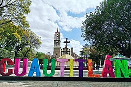
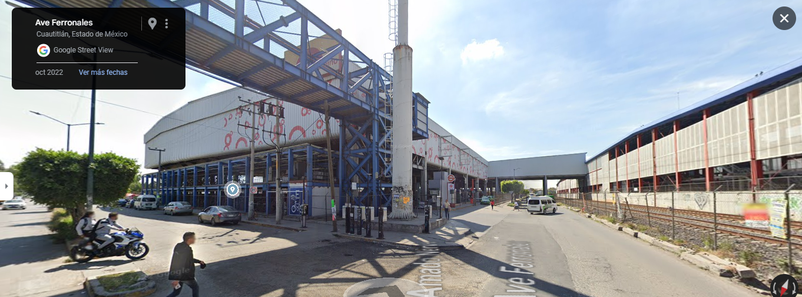

Bienvenidos a Cuautitlan!
Historia
De acuerdo al Códice Chimalpopoca o Anales de Cuautitlán, el lugar fue poblado por chichimecas, grupo recolector y cazador. Nopaltzin, Tlotzin y Quinatzin trataron de hacerlos sedentarios, pero es hasta el siglo XIV cuando alcanzan esta condición. Cuando gobernaba Xaltemoctzin el viejo, Cuautitlán estaba organizado en cuatro zonas: la primera estaba constituida por Tequixnáhuac, Tepoxalco y Tzompanco; la segunda, Chalmecapan, Cuauhtlapan y Citlaltépetl; la tercera Nepantla, Tepotzotlán y Huehuetocan; la cuarta por Atempan, Coyotepec y Otlazpan. Estuvieron bajo el dominio de los tepanecas a quienes pagaban tributo. Era una de las siete provincias tributarias de Tlacopan. A la llegada de los españoles gobernaba Aztatzonzin. Posteriormente a la conquista, Cuautitlán fue dada en Encomienda y contó con tres cabeceras y un total de 5,020 tributarios para 1560. Cuautitlán quedó bajo la cristianización de los franciscanos junto con sus sujetos. Construyeron el convento de San Buenaventura y establecieron la cofradía de la Purísima Concepción de Nuestra Señora de Cuautitlán, de la que tenía gran cantidad de adeptos indígenas, pues les ofrecía a sus miembros un entierro indígena y cuidados en hospitales.
La población de Cuautitlán sufrió permanentemente de los arduos y excesivos trabajos que se requirieron para la construcción del Tajo de Nochistongo, proyecto que buscó desalojar el agua de los lagos que inundaban la ciudad de los palacios. En la etapa de la independencia y al crearse el Estado de México, Cuautitlán pasa a formar parte administrativa y políticamente del distrito IV de México. Durante los años en que la lucha liberal y conservadora fue latente, el territorio de Cuautitlán pasó de uno a otro nombre en lo administrativo, conforme al criterio de quien estuviera en el poder. Asimismo, fue cabecera de distrito como partido.
Cuautitlan en la actualidad
La zona combina áreas urbanas con un ambiente tradicional, ofreciendo una mezcla de modernidad y cultura local. Actualmente, Cuautitlán cuenta con diversas opciones comerciales, educativas y de transporte, lo que facilita la vida diaria de sus habitantes. Sin embargo, también enfrenta desafíos comunes en zonas en expansión, como el tráfico y la necesidad de mejorar la infraestructura. A pesar de esto, sigue siendo una comunidad vibrante y en desarrollo.
Datos curiosos
- Origen del nombre: Cuautitlán proviene del náhuatl "Cuāuhtitlān", que significa "Lugar entre los árboles".
- Fundación: Cuautitlán fue fundado en el año 1321, siendo una de las poblaciones más antiguas del Valle de México.
- Santo Patrón: El santo patrón de Cuautitlán es San Juan Diego, a quien se le apareció la Virgen de Guadalupe en 1531.
- Centro Industrial: Es una importante zona industrial, hogar de varias plantas de ensamblaje de automóviles, incluyendo una planta de Ford.
- Fiesta Patronal: Cada 12 de diciembre se celebra la Fiesta Patronal en honor a San Juan Diego, con procesiones y festividades en todo el municipio.
- Conectividad: Cuautitlán cuenta con una estación del tren suburbano que conecta con la Ciudad de México, facilitando el traslado diario de sus habitantes.